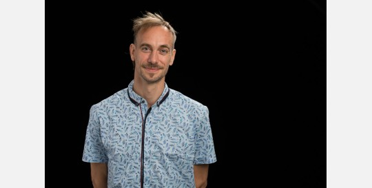

Biography
My master thesis, in physics, was an attempt to describe the behavior of cellular automata through the lens of information theory. Since then, I have devoted myself to the study of marine ecosystems using data analysis and ecological modelling. My PhD thesis, dedicated to the Black Sea, has been praised for its inter-disciplinarity and relevance for managerial concerns. After a series of postdoctoral experiences in oceanography (Spain, Italy, Belgium, and France), I’m currently holding a FedTwin cross-insitutional postion between the academic research team BGEOSYS at Université Libre de Bruxelles and the public research team ECOMOD at the Royal Belgian Institute of Natural Sciences. My current objective is to building a task force within and accross these teams, focused on the study of ecosystem dynamics accross the Land-Ocean Continuum (RECAP).
Marine models
Through past commitments, I had the opportunity to use and contribute to the development of a large variety of marine modelling tools addressing the hydrodynamics, benthic and pelagic biogeochemistry components, and their connection with high trophic levels and societal stakes. These models were deployed in 3D, 1D, and Lagrangian settings, to address process studies, sensitivity analyses, long-term hindcast (production and analyses), operational forecasts and downstream service production, all of which involve a specific set of validation protocols.
At ECOMOD, I now coordinate the development of the biogeochemical module of COHERENS, where our first achievement has been to ensure a compatibility module between COHERENS and FABM.
At BGEOSYS, I coordinate the technical developments of CGEM, a 1D estuarine model resolving the biogeochemical exchanges and transformation processes at the interface between the land and marine domains.
Data Analysis
The conditioning, calibration, and validation of these models provided me with a good overview of the various datasets and monitoring tools relevant to marine and coastal dynamics. In general, I favour in my works to evidence phenomena from observations before employing models to describe underlying mechanisms. During my PhD, while working on the simulation of Black Sea oxygen dynamics, I applied a detrending methodology (Capet et al, 2014, Ocean Science) on datasets of various nature, and revealed an impressive decline in the oxygen inventory of the Black Sea over the last decades (Capet et al, 2016, Biogeosciences). Later, by combining model and in situ time series (1955-2020), I related this trend to a warming-induced shift in the ventilation regime of the Black Sea (Capet et al. 2020, Biogeosciences). From these works, I proposed an Ocean Monitoring Index to keep track of this trend for the Copernicus Marine Service. During the master thesis of my colleague Florian Ricour, we used BGC-Argo to characterise the morphology of the Deep-Chlorophyll Maximum in the Black Sea (Ricour, Capet, et al., Biogeosciences, 2021)
Besides, I was introduced to remote-sensing altimetry and oceanic mesoscale dynamics during my first postdoc (IMEDEA, Spain; Capet, et al. 2014, Geophysical Research Letters). More recently, in the frame of an ESA project, I have combined altimetry and Argo profiles to assess the subsurface oxygen imprint of Black Sea (Capet, et al. 2022).
In an ongoing framework set in Lake Nokoue, Benin, we attempt to use in-situ species characterization of phytoplancton groups with multi and hyper spectral ocean color datasets, to infer the spatial and seasonal distribution of toxic algaes, and provide managment support for this ecosystem.
Coastal oceanography
My concern for societal issues quickly draw me to the coastal environment that concentrates high stakes and dependencies, and its specific modelling challenges. A clear limitation of marine models appeared when addressing benthic hypoxia in coastal shelves (Capet et al. 2014, Biogeosciences): too often, the representation of dissolved and particulate fluxes at the sediment-water interface largely over-simplify diagenetic processes. After having implemented an efficient approach towards benthic dynamics in the Black Sea (Capet et al, 2016, Ocean Modelling), I obtained a Marie-Curie grant (OGS, Italy) for application in the Mediterranean Sea and joined with Pr. K. Soetaert (NIOZ, the Netherlands) to automatize the calibration of diagenetic models. I then applied this method to relate sediment core data to functional ‘facies’ of benthic communities. These facies provided a convenient way to introduce spatial variation of bioturbation (solid-phase mixing induced by dwelling) and bioirrigation (dissolved exchanges induced by ventilation) in coupled models. Benthic-pelagic coupling remains an active research line, now oriented to North Sea sediments and the challenge of deriving a umbrella modelling framework adequate for both permeable and non-permeable sediments.
An important part of my activities in the North Sea gravitates around offshore renewable energies, which started for me with FACE-IT (2016-20), where I co-supervised a PhD evaluating the impact of offshore windfarms on sediment dynamics in the North Sea. Since then, I’ve joined the ICES Working Group on Marine and Benthal Renewable Developments ICES_WGMBRED, suggsting ways to progress on the question “How do Offshore wind farms impact coastal ecosystem services”. I proposed a semi-quantitative framework to synthesise expert opinions on the links between pressures, organisms, functions, and services (Diamond Diagram). I’m now active with different degrees of involvement in RBINS research dedicated to the environmental impact of solar and wind offshore renewable energy (MarineSPOTS, ECOMPV, SWIM), most often with colleagues from MARECO.
Applied and operational oceanography
I’ve for long be in touch with the Copernicus Marine Service community, among others through the Marine Forecasting Center for the Black Sea, that was ensured by my former group at ULiège.
In 2018, I joined the foundation of the EuroGOOS Coastal Working Group (CWG, which I now co-chair with G. El Serafy), and conducted the first systematic survey questioning the capacity of European operational models towards coastal phenomena (Capet et al, 2020, Frontiers in Marine Science). The CWG now collaborates with the OceanForecast Decade Collaborative Center, to pursue this exercice in the frame of their Atlas of Ocean Operational Forecasting Systems.
Professional experiences
- Royal Belgian Institute of Natural Sciences / Université Libre de Bruxelles | Brussels, Belgium
FedTwin Position | 2024 - Present - Royal Belgian Institute of Natural Sciences | Brussels, Belgium
Senior Researcher | Jan 2023 - Dec 2023 - KU Leuven | Leuven, Belgium
Postdoctoral grant | Sept 2022 - Dec 2022 - ULiège | Liège, Belgium
FNRS Postdoctoral grant | Oct 2019 - Aug 2022 - IGE | Grenoble, France
CRNS Postdoctoral grant | Oct 2021 - Dec 2021 - ULiège | Liège, Belgium
Postdoctoral research contract | Oct 2016 - Oct 2019 - OGS | Trieste, Italy
Marie Curie Postdoctoral grant | Oct 2014 - Oct 20126 - IMEDEA | Esporles, Spain
Postdoctoral research contract | May 2014 - Sep 2014 - ULiège | Liège, Belgium
Doctoral research contract | Jan 2012 - Mar 2014 - ICMAN | Cadiz, Spain
FNRS Travel grant | Nov 2009 - May 2010 - ULiège | Liège, Belgium
FNRS-FRIA PhD grant | Sep 2007 - Dec 2011
Education
System of Environmental-Economic Accounting - Ecosystem Accounting | 2022, UN Statistics Division e-Learning platform
PhD Oceanography | 2014, GHER-MAST, ULiège
MSc Physics | 2006, ULiège
BSc Physics | 2003, ULiège
(Ongoing) Projects
- CODEBLUE : Eutrophication science-policy dialog and multi-model ensembles.
- SWIM : Environmental impact of offshore solar energy
- FOCCUS : Bridging regional and local operational forecasting systems; ensemble simulations.
- ECOMPV : Environmental impact of offshore solar energy.
- OWIDEX : Ecosystem services impact of offshore wind energy.
- OUTFLOW : Environmental impact of offshore wind energy.
- DEHEAT : Marine Carbon Dioxide Removal solutions.
- RECAP : Land-Ocean Aquatic Continuum.
- COHERENS : The modelling tool of ECOMOD.
Publications
2025
- Ciavatta, S., Lazzari, P., Álvarez, E., Bertino, L., Bolding, K., Bruggeman, J., Capet, A., Cossarini, G., Daryabor, F., Nerger, L., et al. Control of simulated ocean ecosystem indicators by biogeochemical observations, Progress in Oceanography, 231, 103384. details
- Cirano, M., Álvarez‑Fanjul, E., Capet, A., Ciliberti, S., Clementi, E., Dewitte, B., Dinápoli, M., El Serafy, G., Hogan, P., Joseph, S., et al. A description of existing Operational Ocean Forecasting Services around the Globe, State of the Planet, 5, 1–33. details
- Veitch, J., Álvarez‑Fanjul, E., Capet, A., Ciliberti, S., Cirano, M., Clementi, E., Davidson, F., El Serafy, G., Franz, G., Hogan, P., et al. A description of Ocean Forecasting Applications around the Globe, State of the Planet, 5, 1–28. details
2024
- Popov, M., Brankart, J.-M., Capet, A., Cosme, E., Brasseur, P. Ensemble analysis and forecast of ecosystem indicators in the North Atlantic using ocean colour observations and prior statistics from a stochastic NEMO–PISCES simulator, Ocean Science, 20(1), 155–180. details
- Gozingan, A. S., Sohou, Z., Baetens, K., Bonou, F., Baloïtcha, E., Gourgue, O., Romanelli, H., Capet, A., Lacroix, G. A 3D numerical baroclinic application of the COHERENS model in the Gulf of Guinea, West Africa, Regional Studies in Marine Science, 79, 103811. details
2023
- El Serafy, G., Mészáros, L., Fernández, V., Capet, A., She, J., Sotillo, M. G., Melet, A., Legrand, S., Mourre, B., Campuzano, F., et al. EuroGOOS roadmap for operational coastal downstream services, Frontiers in Marine Science, 10.
- Ciliberti, S. A., Fanjul, E., Pearlman, J., Wilmer‑Becker, K., Bahurel, P., Ardhuin, F., Arnaud, A., Bell, M., Berthou, S., Bertino, L., et al. Evaluation of operational ocean forecasting systems from the perspective of the users and the experts, State of the Planet, 1.
- Grégoire, M., Alvera‑Azcarate, A., Buga, L., Capet, A., Constantin, S., D’Ortenzio, F., Doxaran, D., Faugère, Y., Garcia‑Espriu, A., Golumbeanu, M., et al. Monitoring Black Sea environmental changes from space: New products for altimetry, ocean colour and salinity…, Frontiers in Marine Science, 9.
2022
- Ricour, F., Capet, A., d’Ortenzio, F., Delille, B., Grégoire, M. Dynamics of the deep chlorophyll maximum in the Black Sea as depicted by BGC‑Argo floats, Biogeosciences, 18(2), 755–774.
- Capet, A., Taburet, G., Mason, E., Pujol, M.-I., Grégoire, M., Rio, M.-H. Using Argo floats to characterize altimetry products: a study of eddy‑induced subsurface oxygen anomalies in the Black Sea, Frontiers in Marine Science, 9:842.
- Robinet, S., Matossian, A. O., Capet, A., Chou, L., Fontaine, F., Grégoire, M., Lepoint, G., Piotrowska, N., Plante, A., Román Romín, O., et al. A Multi‑Proxy Approach to Reconstruct Hypoxia on the NW Black Sea Shelf…, Journal of Marine Science and Engineering, 10(3), 319.
2021
- Ivanov, E., Capet, A., De Borger, E., Degraer, S., Delhez, E. J. M., Soetaert, K., Vanaverbeke, J., Grégoire, M. Offshore wind farm footprint on organic and mineral particle flux to the bottom, Frontiers in Marine Science, 8, 631799.
- De Borger, E., Ivanov, E., Capet, A., Braeckman, U., Vanaverbeke, J., Grégoire, M., Soetaert, K. Offshore windfarm footprint of sediment organic matter mineralization processes, Frontiers in Marine Science, 8, 667.
- von Schuckmann, K., Le Traon, P.-Y., Smith, N., Pascual, A., Djavidnia, S., Gattuso, J.-P., Grégoire, M., Aaboe, S., Alari, V., Alexander, B. E., et al. Copernicus Marine Service Ocean State Report, Issue 5, Journal of Operational Oceanography, 14(sup1), S1–S185.
- Ciliberti, S. A., Grégoire, M., Staneva, J., Palazov, A., Coppini, G., Lecci, R., Peneva, E., Matreata, M., Marinova, V., Masina, S., et al. Monitoring and Forecasting the Ocean State and Biogeochemical Processes in the Black Sea: Recent Developments…, J. Marine Science & Engineering, 9(10), 1146.
- Birchenough, S., Boon, A., Braeckman, U., Brey, T., Brzana, R., Buyse, J., Capet, A., Carey, D., Causon, P., Coolen, J. W. P., et al. ICES (2021) Working Group on Marine Benthal and Renewable Energy Developments, ICES Scientific Reports.
2020
- Capet, A., Fernández, V., She, J., Dabrowski, T., Umgiesser, G., Stanev, J., Mészáros, L., Campuzano, F., Ursella, L., Nolan, G., et al. Operational modeling capacity in European Seas—an EuroGOOS perspective and recommendations for improvement, Frontiers in Marine Science, 7:129.
- Capet, A., Cook, P., Garcia‑Robledo, E., Hoogakker, B., Paulmier, A., Rabouille, C., Vaquer‑Sunyer, R. Facing Marine Deoxygenation, Frontiers in Marine Science, 7:46.
- Ivanov, E., Capet, A., Barth, A., Delhez, E. J. M., Soetaert, K., Grégoire, M. Hydrodynamic variability in the Southern Bight of the North Sea…, Ocean Modelling, 154, 101682.
- Capet, A., Vandenbulcke, L., Grégoire, M. A new intermittent regime of convective ventilation threatens the Black Sea oxygenation status, Biogeosciences, 17(24), 6507–6525.
- Akoumianaki, I., Capet, A. Models at the Service of Marine Nature‑based Solutions, in Modelling Nature‑based Solutions…, Cambridge Univ. Press.
2017
- Pascual, A., Ruiz, S., Olita, A., Troupin, C., Claret, M., Casas, B., Mourre, B., Poulain, P.-M., Tovar‑Sánchez, A., Capet, A., et al. A multiplatform experiment to unravel meso‑ and submesoscale processes in an intense front (AlborEx), Frontiers in Marine Science, 4:39.
- Olita, A., Capet, A., Claret, M., Mahadevan, A., Poulain, P.-M., Ribotti, A., Ruiz, S., Tintoré, J., Tovar‑Sánchez, A., Pascual, A. Frontal dynamics boost primary production in the summer stratified Mediterranean Sea, Ocean Dynamics, 67(6), 767–782.
2016
- Capet, A., Meysman, F. J. R., Akoumianaki, I., Soetaert, K., Grégoire, M. Integrating sediment biogeochemistry into 3D oceanic models: A study of benthic‑pelagic coupling in the Black Sea, Ocean Modelling, 101, 83–100.
- Capet, A., Stanev, E., Beckers, J.-M., Murray, J., Grégoire, M. Decline of the Black Sea oxygen inventory, Biogeoscience, 13, 1287–1297.
- Barceló‑Llull, B., Mason, E., Capet, A., Pascual, A. Impact of vertical and horizontal advection on nutrient distribution in the southeast Pacific, Ocean Science, 12(4), 1003–1011.
2014
- Capet, A., Troupin, C., Carstensen, J., Grégoire, M., Beckers, J.-M. Untangling spatial and temporal trends in the variability of the Black Sea Cold Intermediate Layer…, Ocean Dynamics, 64(3), 315–324.
- Capet, A., Mason, E., Rossi, V., Troupin, C., Faugère, Y., Pujol, M.-I., Pascual, A. Implications of refined altimetry on estimates of mesoscale activity…, Geophysical Research Letters, 41(21), 7602–7610.
2013
- Capet, A., Beckers, J.-M., Grégoire, M. Drivers, mechanisms and long‑term variability of seasonal hypoxia on the Black Sea northwestern shelf…, Biogeosciences, 10(6), 3943–3962.
2012
- Troupin, C., Barth, A., Sirjacobs, D., … Capet, A., et al. Generation of analysis and consistent error fields using the Data Interpolating Variational Analysis (DIVA), Ocean Modelling, 52, 90–101.
- Capet, A., Barth, A., Beckers, J.-M., Grégoire, M. Interannual variability of Black Sea’s hydrodynamics and connection to atmospheric patterns, Deep Sea Research Part II, 77, 128–142.
2010
- Vandenbulcke, L., Capet, A., Beckers, J.-M., Grégoire, M., Besiktepe, S. Onboard implementation of the GHER model for the Black Sea, with SST and CTD data assimilation, Journal of Operational Oceanography, 3(2), 47–54.